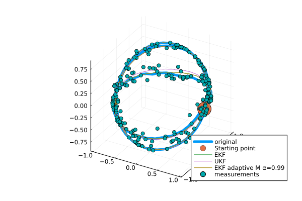

GeometricKalman
Kalman filters on manifolds with an affine connection, unifying the Lie group and Riemannian approaches.

arXiv preprint: https://arxiv.org/abs/2506.01086.
Getting started
Basic setting (example: a car driving on a sphere)
using Manifolds
using RecursiveArrayTools
using LinearAlgebra
using Distributions
using GeometricKalman
using GeometricKalman: gen_car_sphere_data, car_sphere_f, car_sphere_h
M = TangentBundle(Manifolds.Sphere(2)) # state manifold
M_obs = Manifolds.Sphere(2) # observation manifold
retraction = Manifolds.FiberBundleProductRetraction()
inverse_retraction = Manifolds.FiberBundleInverseProductRetraction()Manifolds.FiberBundleInverseProductRetraction()Generating data using the gen_car_sphere_data function.
dt = 0.01
vt = 5
times, samples, controls, measurements = gen_car_sphere_data(;
vt = vt,
N = 200,
noise_f_distr = MvNormal(
[0.0, 0.0, 0.0, 0.0],
1e4 * diagm([1e-3, 1e-3, 1e-2, 1e-2]),
),
noise_h_distr = MvNormal([0.0, 0.0], diagm([0.01, 0.01])),
retraction = retraction,
)([0.0, 0.01, 0.02, 0.03, 0.04, 0.05, 0.06, 0.07, 0.08, 0.09 … 1.91, 1.92, 1.93, 1.94, 1.95, 1.96, 1.97, 1.98, 1.99, 2.0], RecursiveArrayTools.ArrayPartition{Float64, Tuple{Vector{Float64}, Vector{Float64}}}[RecursiveArrayTools.ArrayPartition{Float64, Tuple{Vector{Float64}, Vector{Float64}}}(([1.0, 0.0, 0.0], [0.0, 1.0, 0.0])), RecursiveArrayTools.ArrayPartition{Float64, Tuple{Vector{Float64}, Vector{Float64}}}(([0.9985312364099393, 0.053845005295818295, 0.006007105653409015], [-0.05386162372578373, 0.999082550803846, -0.0021793365714407446])), RecursiveArrayTools.ArrayPartition{Float64, Tuple{Vector{Float64}, Vector{Float64}}}(([0.9963475539432082, 0.08538843196719226, -0.0006061662892188182], [-0.08537861643978363, 0.9962511605591526, 0.00255506918691166])), RecursiveArrayTools.ArrayPartition{Float64, Tuple{Vector{Float64}, Vector{Float64}}}(([0.9913660390144825, 0.13102178184650287, 0.005164239586149551], [-0.13093800854162824, 0.9906437188680979, 0.0022442148589137565])), RecursiveArrayTools.ArrayPartition{Float64, Tuple{Vector{Float64}, Vector{Float64}}}(([0.9864742721321358, 0.1637979291486965, 0.006224855658701758], [-0.16401280098022356, 0.9877292592132643, 0.0010283368741545512])), RecursiveArrayTools.ArrayPartition{Float64, Tuple{Vector{Float64}, Vector{Float64}}}(([0.9766142074117264, 0.21375727872112887, 0.023076301161645347], [-0.21424099774192146, 0.9785002860332739, 0.003000647028317126])), RecursiveArrayTools.ArrayPartition{Float64, Tuple{Vector{Float64}, Vector{Float64}}}(([0.9618385949641732, 0.27210545829761046, 0.028725194550992518], [-0.2726464813807413, 0.9636500144504087, 0.0009566428732701918])), RecursiveArrayTools.ArrayPartition{Float64, Tuple{Vector{Float64}, Vector{Float64}}}(([0.9473376622400872, 0.31855926333027906, 0.03273147488208052], [-0.32069687735685354, 0.9533710064380111, 0.0031487915521474794])), RecursiveArrayTools.ArrayPartition{Float64, Tuple{Vector{Float64}, Vector{Float64}}}(([0.9282795612493633, 0.36788761643398926, 0.05436688184186836], [-0.3701016574690852, 0.9340566494541752, -0.0012888392082892278])), RecursiveArrayTools.ArrayPartition{Float64, Tuple{Vector{Float64}, Vector{Float64}}}(([0.9181622196763437, 0.39292260084245056, 0.05089172925155865], [-0.3945679272332197, 0.9228244735335831, -0.006311995781195696])) … RecursiveArrayTools.ArrayPartition{Float64, Tuple{Vector{Float64}, Vector{Float64}}}(([-0.8045172731213657, 0.3222928795163698, 0.4988779981743119], [-2.0090915923128225, -1.6780598305407022, -2.155882116366783])), RecursiveArrayTools.ArrayPartition{Float64, Tuple{Vector{Float64}, Vector{Float64}}}(([-0.891939093828497, 0.23087919161490106, 0.38876657749818166], [-1.541912568536215, -1.8397296481473644, -2.4450064902844644])), RecursiveArrayTools.ArrayPartition{Float64, Tuple{Vector{Float64}, Vector{Float64}}}(([-0.951350272740661, 0.1435702568008519, 0.2726173874102817], [-1.0552085530955173, -1.94773002858766, -2.6566054765710194])), RecursiveArrayTools.ArrayPartition{Float64, Tuple{Vector{Float64}, Vector{Float64}}}(([-0.9900687398209546, 0.03487811426233288, 0.13618886729410415], [-0.4592454246678689, -2.0026175083297537, -2.825759727916048])), RecursiveArrayTools.ArrayPartition{Float64, Tuple{Vector{Float64}, Vector{Float64}}}(([-0.9972687784536264, -0.07326601380769321, -0.00933138480308221], [0.17348542036023346, -1.9910891838548044, -2.907652634424336])), RecursiveArrayTools.ArrayPartition{Float64, Tuple{Vector{Float64}, Vector{Float64}}}(([-0.970720970149181, -0.16956662260707092, -0.17014099626563975], [0.839775583248108, -1.9081035811935954, -2.8895862832679895])), RecursiveArrayTools.ArrayPartition{Float64, Tuple{Vector{Float64}, Vector{Float64}}}(([-0.9151446553275813, -0.258860006201707, -0.30903358557706206], [1.4422483541152693, -1.7763085646696517, -2.7830328708482464])), RecursiveArrayTools.ArrayPartition{Float64, Tuple{Vector{Float64}, Vector{Float64}}}(([-0.8276580169487204, -0.3305584631477419, -0.45355629134862085], [2.038748364655721, -1.5760572911777668, -2.571692587651352])), RecursiveArrayTools.ArrayPartition{Float64, Tuple{Vector{Float64}, Vector{Float64}}}(([-0.7106648538580627, -0.41467674040874425, -0.5683297163222049], [2.5736965724358987, -1.3186861229385292, -2.256097470567306])), RecursiveArrayTools.ArrayPartition{Float64, Tuple{Vector{Float64}, Vector{Float64}}}(([-0.5607259327997642, -0.47150938261348085, -0.6806359749479078], [3.0581899709508167, -0.9942854272014408, -1.8306283565371484]))], Any[0.0, 0.004999979166692708, 0.009999833334166664, 0.01499943750632809, 0.01999866669333308, 0.024997395914712332, 0.02999550020249566, 0.034992854604336196, 0.03998933418663416, 0.044984814037660234 … 0.8163137404456835, 0.8191915683009983, 0.8220489164097717, 0.8248857133384501, 0.8277018881672576, 0.8304973704919705, 0.8332720904256761, 0.8360259786005205, 0.838758966169443, 0.8414709848078965], [[0.9985474377390773, -0.04395559769602689, -0.031159589469512576], [0.9879363181409775, 0.039077958654369936, -0.14984907222087415], [0.9905916255459959, 0.12115066166368198, -0.06364549140821943], [0.9892371852846605, 0.08861285994367901, -0.11643690266699837], [0.9672183882039525, 0.25297752961803294, 0.02215759527805058], [0.9676167480378973, 0.2511388040086779, 0.025438750709405503], [0.9611940511188154, 0.2741701967260677, 0.030605543958394706], [0.9396152100760001, 0.34053259252364, 0.034070668073325094], [0.9510565434247985, 0.22347799770976998, 0.21342220069267973], [0.8950769545903425, 0.44555100602278797, -0.017931714735618456] … [-0.7237481376681182, 0.23044583269751817, 0.6504485770714532], [-0.912695835880534, 0.15500364215284962, 0.3781007565262002], [-0.9452025896766482, 0.19804755440785898, 0.2595558334186004], [-0.9899793544979528, 0.04025746367507223, 0.13535218611558328], [-0.9923051614827408, -0.08866328674655381, -0.08642504311836059], [-0.9477334246693888, -0.12377590036251393, -0.2940763204576006], [-0.9343867589142493, -0.34125541889991645, -0.10230407536930161], [-0.8023990369946877, -0.24841668502677847, -0.5426278061713244], [-0.6934652052092556, -0.4385460405747652, -0.5716496999564349], [-0.4443163626001043, -0.5493148850329181, -0.7076977652975068]])Setting initial conditions for filters
p0 = ArrayPartition([1.0, 0.0, 0.0], [0.0, 1.0, 0.0])
P0 = diagm([0.1, 0.1, 0.1, 0.1])
Q = diagm([0.1, 0.1, 0.01, 0.01])
R = diagm([0.01, 0.01])2×2 Matrix{Float64}:
0.01 0.0
0.0 0.01Adapting system dynamics to the interface expected by Kalman filters.
car_f_adapted(p, q, noise, t::Real) = car_sphere_f(p, q, noise, t::Real; vt = vt)
f_tilde = GeometricKalman.default_discretization(
M,
car_f_adapted;
dt = dt,
retraction = retraction,
)(::GeometricKalman.var"#tilde_f#27"{Float64, Manifolds.FiberBundleProductRetraction, FiberBundle{ℝ, TangentSpaceType, Sphere{ℝ, ManifoldsBase.TypeParameter{Tuple{2}}}, Manifolds.FiberBundleProductVectorTransport{ParallelTransport, ParallelTransport}}, typeof(Main.car_f_adapted)}) (generic function with 1 method)Filter-specific settings
sp = WanMerweSigmaPoints(; α = 1.0)
filter_params = [
( # extended Kalman filter
"EKF",
(;
propagator = EKFPropagator(M, f_tilde; B_M = DefaultOrthonormalBasis()),
updater = EKFUpdater(
M,
M_obs,
car_sphere_h;
B_M = DefaultOrthonormalBasis(),
B_M_obs = DefaultOrthonormalBasis(),
),
),
),
( # unscented Kalman filter
"UKF",
(;
propagator = UnscentedPropagator(
M;
sigma_points = sp,
inverse_retraction_method = inverse_retraction,
),
updater = UnscentedUpdater(; sigma_points = sp),
),
),
( # adaptive extended Kalman filter
"EKF adaptive M α=0.99",
(;
propagator = EKFPropagator(M, f_tilde; B_M = DefaultOrthonormalBasis()),
updater = EKFUpdater(
M,
M_obs,
car_sphere_h;
B_M = DefaultOrthonormalBasis(),
B_M_obs = DefaultOrthonormalBasis(),
),
measurement_covariance_adapter = CovarianceMatchingMeasurementCovarianceAdapter(
0.99,
),
),
),
]3-element Vector{Tuple{String, NamedTuple}}:
("EKF", (propagator = EKFPropagator{GeometricKalman.var"#jacobian_p#3"{DefaultOrthonormalBasis{ℝ, TangentSpaceType}, DefaultOrthonormalBasis{ℝ, TangentSpaceType}, Manifolds.FiberBundleProductRetraction, Manifolds.FiberBundleInverseProductRetraction, FiberBundle{ℝ, TangentSpaceType, Sphere{ℝ, ManifoldsBase.TypeParameter{Tuple{2}}}, Manifolds.FiberBundleProductVectorTransport{ParallelTransport, ParallelTransport}}, FiberBundle{ℝ, TangentSpaceType, Sphere{ℝ, ManifoldsBase.TypeParameter{Tuple{2}}}, Manifolds.FiberBundleProductVectorTransport{ParallelTransport, ParallelTransport}}, GeometricKalman.var"#tilde_f#27"{Float64, Manifolds.FiberBundleProductRetraction, FiberBundle{ℝ, TangentSpaceType, Sphere{ℝ, ManifoldsBase.TypeParameter{Tuple{2}}}, Manifolds.FiberBundleProductVectorTransport{ParallelTransport, ParallelTransport}}, typeof(Main.car_f_adapted)}, FiniteDifferences.AdaptedFiniteDifferenceMethod{5, 1, FiniteDifferences.UnadaptedFiniteDifferenceMethod{7, 5}}}}(GeometricKalman.var"#jacobian_p#3"{DefaultOrthonormalBasis{ℝ, TangentSpaceType}, DefaultOrthonormalBasis{ℝ, TangentSpaceType}, Manifolds.FiberBundleProductRetraction, Manifolds.FiberBundleInverseProductRetraction, FiberBundle{ℝ, TangentSpaceType, Sphere{ℝ, ManifoldsBase.TypeParameter{Tuple{2}}}, Manifolds.FiberBundleProductVectorTransport{ParallelTransport, ParallelTransport}}, FiberBundle{ℝ, TangentSpaceType, Sphere{ℝ, ManifoldsBase.TypeParameter{Tuple{2}}}, Manifolds.FiberBundleProductVectorTransport{ParallelTransport, ParallelTransport}}, GeometricKalman.var"#tilde_f#27"{Float64, Manifolds.FiberBundleProductRetraction, FiberBundle{ℝ, TangentSpaceType, Sphere{ℝ, ManifoldsBase.TypeParameter{Tuple{2}}}, Manifolds.FiberBundleProductVectorTransport{ParallelTransport, ParallelTransport}}, typeof(Main.car_f_adapted)}, FiniteDifferences.AdaptedFiniteDifferenceMethod{5, 1, FiniteDifferences.UnadaptedFiniteDifferenceMethod{7, 5}}}(DefaultOrthonormalBasis(ℝ), DefaultOrthonormalBasis(ℝ), Manifolds.FiberBundleProductRetraction(), Manifolds.FiberBundleInverseProductRetraction(), TangentBundle(Sphere(2, ℝ)), TangentBundle(Sphere(2, ℝ)), GeometricKalman.var"#tilde_f#27"{Float64, Manifolds.FiberBundleProductRetraction, FiberBundle{ℝ, TangentSpaceType, Sphere{ℝ, ManifoldsBase.TypeParameter{Tuple{2}}}, Manifolds.FiberBundleProductVectorTransport{ParallelTransport, ParallelTransport}}, typeof(Main.car_f_adapted)}(0.01, Manifolds.FiberBundleProductRetraction(), TangentBundle(Sphere(2, ℝ)), Main.car_f_adapted), FiniteDifferences.AdaptedFiniteDifferenceMethod{5, 1, FiniteDifferences.UnadaptedFiniteDifferenceMethod{7, 5}}([-2, -1, 0, 1, 2], [0.08333333333333333, -0.6666666666666666, 0.0, 0.6666666666666666, -0.08333333333333333], ([-0.08333333333333333, 0.5, -1.5, 0.8333333333333334, 0.25], [0.08333333333333333, -0.6666666666666666, 0.0, 0.6666666666666666, -0.08333333333333333], [-0.25, -0.8333333333333334, 1.5, -0.5, 0.08333333333333333]), 10.0, 1.0, Inf, 0.05555555555555555, 1.4999999999999998, FiniteDifferences.UnadaptedFiniteDifferenceMethod{7, 5}([-3, -2, -1, 0, 1, 2, 3], [-0.5, 2.0, -2.5, 0.0, 2.5, -2.0, 0.5], ([0.5, -4.0, 12.5, -20.0, 17.5, -8.0, 1.5], [-0.5, 2.0, -2.5, 0.0, 2.5, -2.0, 0.5], [-1.5, 8.0, -17.5, 20.0, -12.5, 4.0, -0.5]), 10.0, 1.0, Inf, 0.5365079365079365, 10.0)))), updater = EKFUpdater{GeometricKalman.var"#jacobian_p#3"{DefaultOrthonormalBasis{ℝ, TangentSpaceType}, DefaultOrthonormalBasis{ℝ, TangentSpaceType}, Manifolds.FiberBundleProductRetraction, LogarithmicInverseRetraction, FiberBundle{ℝ, TangentSpaceType, Sphere{ℝ, ManifoldsBase.TypeParameter{Tuple{2}}}, Manifolds.FiberBundleProductVectorTransport{ParallelTransport, ParallelTransport}}, Sphere{ℝ, ManifoldsBase.TypeParameter{Tuple{2}}}, typeof(GeometricKalman.car_sphere_h), FiniteDifferences.AdaptedFiniteDifferenceMethod{5, 1, FiniteDifferences.UnadaptedFiniteDifferenceMethod{7, 5}}}}(GeometricKalman.var"#jacobian_p#3"{DefaultOrthonormalBasis{ℝ, TangentSpaceType}, DefaultOrthonormalBasis{ℝ, TangentSpaceType}, Manifolds.FiberBundleProductRetraction, LogarithmicInverseRetraction, FiberBundle{ℝ, TangentSpaceType, Sphere{ℝ, ManifoldsBase.TypeParameter{Tuple{2}}}, Manifolds.FiberBundleProductVectorTransport{ParallelTransport, ParallelTransport}}, Sphere{ℝ, ManifoldsBase.TypeParameter{Tuple{2}}}, typeof(GeometricKalman.car_sphere_h), FiniteDifferences.AdaptedFiniteDifferenceMethod{5, 1, FiniteDifferences.UnadaptedFiniteDifferenceMethod{7, 5}}}(DefaultOrthonormalBasis(ℝ), DefaultOrthonormalBasis(ℝ), Manifolds.FiberBundleProductRetraction(), LogarithmicInverseRetraction(), TangentBundle(Sphere(2, ℝ)), Sphere(2, ℝ), GeometricKalman.car_sphere_h, FiniteDifferences.AdaptedFiniteDifferenceMethod{5, 1, FiniteDifferences.UnadaptedFiniteDifferenceMethod{7, 5}}([-2, -1, 0, 1, 2], [0.08333333333333333, -0.6666666666666666, 0.0, 0.6666666666666666, -0.08333333333333333], ([-0.08333333333333333, 0.5, -1.5, 0.8333333333333334, 0.25], [0.08333333333333333, -0.6666666666666666, 0.0, 0.6666666666666666, -0.08333333333333333], [-0.25, -0.8333333333333334, 1.5, -0.5, 0.08333333333333333]), 10.0, 1.0, Inf, 0.05555555555555555, 1.4999999999999998, FiniteDifferences.UnadaptedFiniteDifferenceMethod{7, 5}([-3, -2, -1, 0, 1, 2, 3], [-0.5, 2.0, -2.5, 0.0, 2.5, -2.0, 0.5], ([0.5, -4.0, 12.5, -20.0, 17.5, -8.0, 1.5], [-0.5, 2.0, -2.5, 0.0, 2.5, -2.0, 0.5], [-1.5, 8.0, -17.5, 20.0, -12.5, 4.0, -0.5]), 10.0, 1.0, Inf, 0.5365079365079365, 10.0))))))
("UKF", (propagator = UnscentedPropagator{WanMerweSigmaPoints{Float64}, Manifolds.FiberBundleInverseProductRetraction, GradientDescentEstimation}(WanMerweSigmaPoints{Float64}(1.0, 2.0, 0.0), Manifolds.FiberBundleInverseProductRetraction(), GradientDescentEstimation()), updater = UnscentedUpdater{WanMerweSigmaPoints{Float64}, LogarithmicInverseRetraction}(WanMerweSigmaPoints{Float64}(1.0, 2.0, 0.0), LogarithmicInverseRetraction())))
("EKF adaptive M α=0.99", (propagator = EKFPropagator{GeometricKalman.var"#jacobian_p#3"{DefaultOrthonormalBasis{ℝ, TangentSpaceType}, DefaultOrthonormalBasis{ℝ, TangentSpaceType}, Manifolds.FiberBundleProductRetraction, Manifolds.FiberBundleInverseProductRetraction, FiberBundle{ℝ, TangentSpaceType, Sphere{ℝ, ManifoldsBase.TypeParameter{Tuple{2}}}, Manifolds.FiberBundleProductVectorTransport{ParallelTransport, ParallelTransport}}, FiberBundle{ℝ, TangentSpaceType, Sphere{ℝ, ManifoldsBase.TypeParameter{Tuple{2}}}, Manifolds.FiberBundleProductVectorTransport{ParallelTransport, ParallelTransport}}, GeometricKalman.var"#tilde_f#27"{Float64, Manifolds.FiberBundleProductRetraction, FiberBundle{ℝ, TangentSpaceType, Sphere{ℝ, ManifoldsBase.TypeParameter{Tuple{2}}}, Manifolds.FiberBundleProductVectorTransport{ParallelTransport, ParallelTransport}}, typeof(Main.car_f_adapted)}, FiniteDifferences.AdaptedFiniteDifferenceMethod{5, 1, FiniteDifferences.UnadaptedFiniteDifferenceMethod{7, 5}}}}(GeometricKalman.var"#jacobian_p#3"{DefaultOrthonormalBasis{ℝ, TangentSpaceType}, DefaultOrthonormalBasis{ℝ, TangentSpaceType}, Manifolds.FiberBundleProductRetraction, Manifolds.FiberBundleInverseProductRetraction, FiberBundle{ℝ, TangentSpaceType, Sphere{ℝ, ManifoldsBase.TypeParameter{Tuple{2}}}, Manifolds.FiberBundleProductVectorTransport{ParallelTransport, ParallelTransport}}, FiberBundle{ℝ, TangentSpaceType, Sphere{ℝ, ManifoldsBase.TypeParameter{Tuple{2}}}, Manifolds.FiberBundleProductVectorTransport{ParallelTransport, ParallelTransport}}, GeometricKalman.var"#tilde_f#27"{Float64, Manifolds.FiberBundleProductRetraction, FiberBundle{ℝ, TangentSpaceType, Sphere{ℝ, ManifoldsBase.TypeParameter{Tuple{2}}}, Manifolds.FiberBundleProductVectorTransport{ParallelTransport, ParallelTransport}}, typeof(Main.car_f_adapted)}, FiniteDifferences.AdaptedFiniteDifferenceMethod{5, 1, FiniteDifferences.UnadaptedFiniteDifferenceMethod{7, 5}}}(DefaultOrthonormalBasis(ℝ), DefaultOrthonormalBasis(ℝ), Manifolds.FiberBundleProductRetraction(), Manifolds.FiberBundleInverseProductRetraction(), TangentBundle(Sphere(2, ℝ)), TangentBundle(Sphere(2, ℝ)), GeometricKalman.var"#tilde_f#27"{Float64, Manifolds.FiberBundleProductRetraction, FiberBundle{ℝ, TangentSpaceType, Sphere{ℝ, ManifoldsBase.TypeParameter{Tuple{2}}}, Manifolds.FiberBundleProductVectorTransport{ParallelTransport, ParallelTransport}}, typeof(Main.car_f_adapted)}(0.01, Manifolds.FiberBundleProductRetraction(), TangentBundle(Sphere(2, ℝ)), Main.car_f_adapted), FiniteDifferences.AdaptedFiniteDifferenceMethod{5, 1, FiniteDifferences.UnadaptedFiniteDifferenceMethod{7, 5}}([-2, -1, 0, 1, 2], [0.08333333333333333, -0.6666666666666666, 0.0, 0.6666666666666666, -0.08333333333333333], ([-0.08333333333333333, 0.5, -1.5, 0.8333333333333334, 0.25], [0.08333333333333333, -0.6666666666666666, 0.0, 0.6666666666666666, -0.08333333333333333], [-0.25, -0.8333333333333334, 1.5, -0.5, 0.08333333333333333]), 10.0, 1.0, Inf, 0.05555555555555555, 1.4999999999999998, FiniteDifferences.UnadaptedFiniteDifferenceMethod{7, 5}([-3, -2, -1, 0, 1, 2, 3], [-0.5, 2.0, -2.5, 0.0, 2.5, -2.0, 0.5], ([0.5, -4.0, 12.5, -20.0, 17.5, -8.0, 1.5], [-0.5, 2.0, -2.5, 0.0, 2.5, -2.0, 0.5], [-1.5, 8.0, -17.5, 20.0, -12.5, 4.0, -0.5]), 10.0, 1.0, Inf, 0.5365079365079365, 10.0)))), updater = EKFUpdater{GeometricKalman.var"#jacobian_p#3"{DefaultOrthonormalBasis{ℝ, TangentSpaceType}, DefaultOrthonormalBasis{ℝ, TangentSpaceType}, Manifolds.FiberBundleProductRetraction, LogarithmicInverseRetraction, FiberBundle{ℝ, TangentSpaceType, Sphere{ℝ, ManifoldsBase.TypeParameter{Tuple{2}}}, Manifolds.FiberBundleProductVectorTransport{ParallelTransport, ParallelTransport}}, Sphere{ℝ, ManifoldsBase.TypeParameter{Tuple{2}}}, typeof(GeometricKalman.car_sphere_h), FiniteDifferences.AdaptedFiniteDifferenceMethod{5, 1, FiniteDifferences.UnadaptedFiniteDifferenceMethod{7, 5}}}}(GeometricKalman.var"#jacobian_p#3"{DefaultOrthonormalBasis{ℝ, TangentSpaceType}, DefaultOrthonormalBasis{ℝ, TangentSpaceType}, Manifolds.FiberBundleProductRetraction, LogarithmicInverseRetraction, FiberBundle{ℝ, TangentSpaceType, Sphere{ℝ, ManifoldsBase.TypeParameter{Tuple{2}}}, Manifolds.FiberBundleProductVectorTransport{ParallelTransport, ParallelTransport}}, Sphere{ℝ, ManifoldsBase.TypeParameter{Tuple{2}}}, typeof(GeometricKalman.car_sphere_h), FiniteDifferences.AdaptedFiniteDifferenceMethod{5, 1, FiniteDifferences.UnadaptedFiniteDifferenceMethod{7, 5}}}(DefaultOrthonormalBasis(ℝ), DefaultOrthonormalBasis(ℝ), Manifolds.FiberBundleProductRetraction(), LogarithmicInverseRetraction(), TangentBundle(Sphere(2, ℝ)), Sphere(2, ℝ), GeometricKalman.car_sphere_h, FiniteDifferences.AdaptedFiniteDifferenceMethod{5, 1, FiniteDifferences.UnadaptedFiniteDifferenceMethod{7, 5}}([-2, -1, 0, 1, 2], [0.08333333333333333, -0.6666666666666666, 0.0, 0.6666666666666666, -0.08333333333333333], ([-0.08333333333333333, 0.5, -1.5, 0.8333333333333334, 0.25], [0.08333333333333333, -0.6666666666666666, 0.0, 0.6666666666666666, -0.08333333333333333], [-0.25, -0.8333333333333334, 1.5, -0.5, 0.08333333333333333]), 10.0, 1.0, Inf, 0.05555555555555555, 1.4999999999999998, FiniteDifferences.UnadaptedFiniteDifferenceMethod{7, 5}([-3, -2, -1, 0, 1, 2, 3], [-0.5, 2.0, -2.5, 0.0, 2.5, -2.0, 0.5], ([0.5, -4.0, 12.5, -20.0, 17.5, -8.0, 1.5], [-0.5, 2.0, -2.5, 0.0, 2.5, -2.0, 0.5], [-1.5, 8.0, -17.5, 20.0, -12.5, 4.0, -0.5]), 10.0, 1.0, Inf, 0.5365079365079365, 10.0)))), measurement_covariance_adapter = CovarianceMatchingMeasurementCovarianceAdapter{Float64}(0.99)))Running the filters. Results will be saved in reconstructions.
reconstructions = NamedTuple[]
for (name, filter_kwargs) in filter_params
kf = discrete_kalman_filter_manifold(
M,
M_obs,
p0,
f_tilde,
car_sphere_h,
P0,
copy(Q),
copy(R);
filter_kwargs...,
)
samples_kalman = []
for i in eachindex(samples)
GeometricKalman.update!(kf, controls[i], measurements[i])
push!(samples_kalman, kf.p_n)
predict!(kf, controls[i])
end
push!(reconstructions, (; data = samples_kalman, label = name))
endPlotting the estimated trajectory and measurements.
using Plots
function trajectory_plot3d(
p0,
samples::Vector,
reconstructions::Vector{<:NamedTuple},
measurements::Vector,
)
fig = plot(
[s.x[1][1] for s in samples],
[s.x[1][2] for s in samples],
[s.x[1][3] for s in samples];
label = "original",
linewidth = 5.0,
)
scatter3d!(map(v -> [v], p0.x[1])..., markersize = 15, label = "Starting point")
for rec in reconstructions
plot!(
[s.x[1][1] for s in rec.data],
[s.x[1][2] for s in rec.data],
[s.x[1][3] for s in rec.data];
label = rec.label,
)
end
scatter!(
[s[1] for s in measurements],
[s[2] for s in measurements],
[s[3] for s in measurements];
label = "measurements",
)
return fig
end
trajectory_plot3d(p0, samples, reconstructions, measurements)